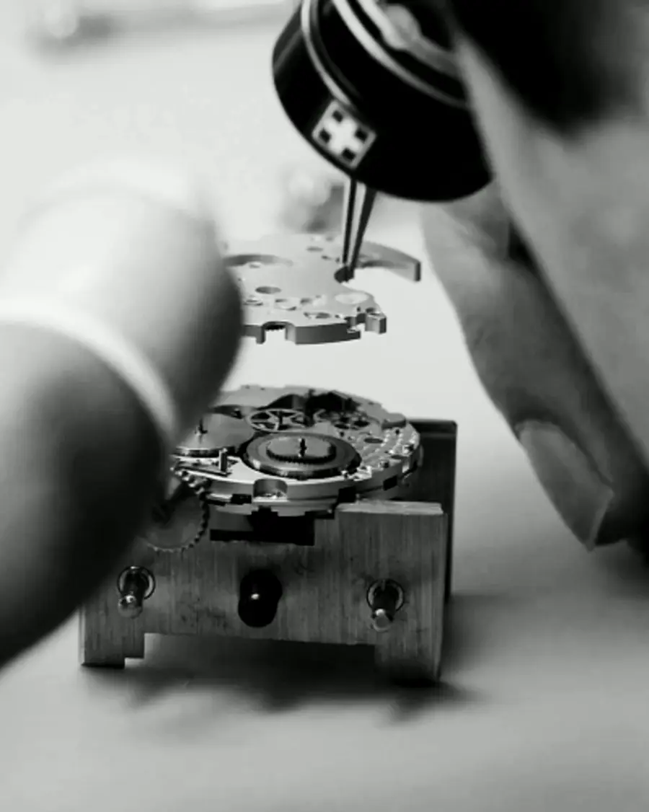

Независимая мастерская
Запрос на обслуживание Tudor
Диагностика начинается с конкретной модели, состояния и истории часов — не с универсального прайса.
Для разных калибров, поколений и корпусов перечень возможных работ отличается. Перед началом вмешательства мастерская подтверждает техническую возможность ремонта и согласовывает объём работ.
Позвонить +7 916 731 49 07Tudor
- Диагностика механизма
- Проверка состояния корпуса и внешних элементов
- Согласование ремонта или обслуживания
- Контроль после выполненных работ
Независимая мастерская. Упоминание Tudor не означает официальную аффилиацию или авторизацию производителя.
Порядок работы
От состояния к результату.
01
Диагностика
Определяем состояние часов и характер вмешательства.
02
Согласование
Фиксируем перечень работ до их начала.
03
Работа
Выполняем согласованные операции без лишнего вмешательства.
04
Контроль
Проверяем параметры, относящиеся к выполненной работе.
05
Выдача
Передаём часы владельцу с понятным описанием результата.
Мастерская
Чиним премиальные часы с 1991 года.
 Осмотр / 01
Осмотр / 01
Регулировка / 02 Отделка / 03
Отделка / 03Обслуживание механизма
после диагностикиКорпус и полировка
по состояниюСтекло
по моделиГерметичность
по задачеСложные механизмы
индивидуальноВопросы перед обращением
Перед тем как оставить часы.
Срок зависит от модели и характера неисправности. После первичного осмотра мастер сообщает, нужна ли углублённая диагностика и когда можно согласовать работы.
До начала основных работ согласуются перечень вмешательств и стоимость. Если в процессе обнаруживается дополнительная неисправность, её не следует устранять без отдельного согласования.
Независимая мастерская не является официальным сервисным центром брендов. Возможность конкретной работы зависит от модели, состояния часов, доступности компонентов и требований владельца.
После сборки проверяются работа механизма и те параметры, которые относятся к выполненной услуге. Для работ, затрагивающих корпус, может потребоваться дополнительный контроль герметичности.
Для часов высокого класса предварительная запись удобнее: можно заранее описать модель и задачу, а мастерская подготовится к осмотру.
Контакты
Мастерская на Петровке.
- Адрес
- 107031, улица Петровка, 23/10, строение 5, Москва
- График
- Пн–Пт 10:00–19:30 · Сб–Вс 11:00–18:30
- Телефон
- +7 916 731 49 07